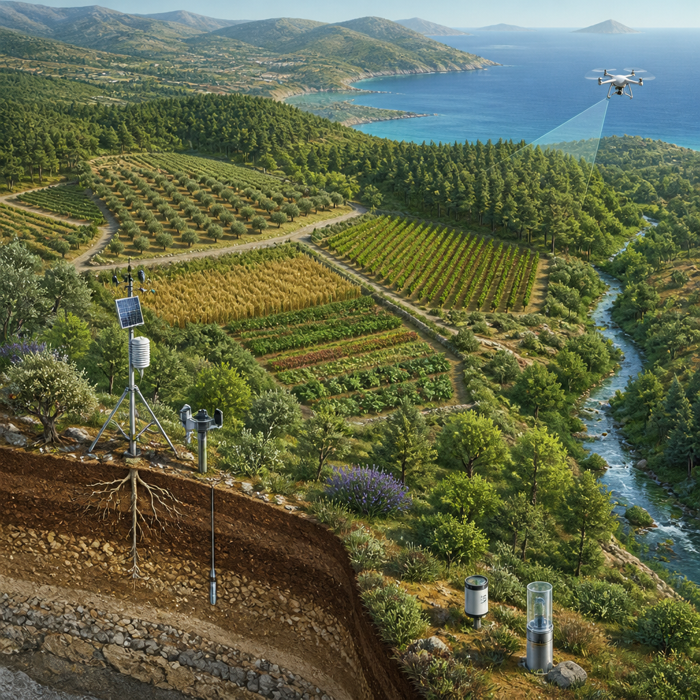
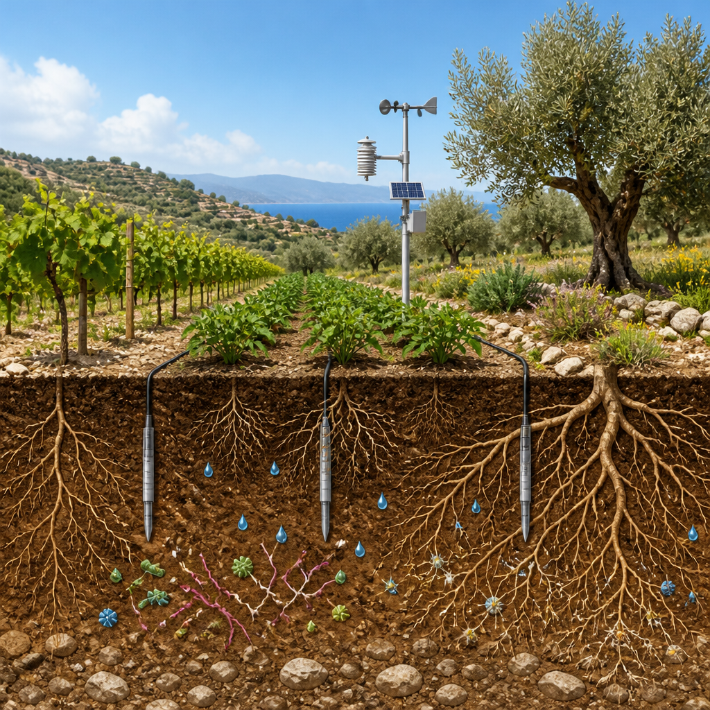

L’incontro annuale del CNR-ISAFoM ha riunito le attività delle quattro sedi su biodiversità, acqua, suoli, foreste e tecnologie per l’agricoltura.
La ricerca sui sistemi agricoli e forestali del Mediterraneo passa da molte scale: dalle risorse genetiche delle piante al suolo, dai batteri che vivono vicino alle radici agli scambi tra biosfera e atmosfera, fino ai dati raccolti da sensori, droni e modelli. Questo il filo conduttore della conferenza annuale del CNR-ISAFoM, dedicata all’innovazione nella ricerca per agricoltura e foreste mediterranee.
L’incontro si è svolto nella sede centrale dell’Istituto per i Sistemi Agricoli e Forestali del Mediterraneo a Portici. Le due giornate hanno messo insieme competenze delle sedi di Portici, Rende, Catania e Perugia, con contributi organizzati in cinque sessioni scientifiche. Il quadro di riferimento è quello dei cambiamenti globali e della transizione agroecologica, cioè un percorso che punta a rendere i sistemi agricoli più sostenibili.
Una prima area di lavoro ha riguardato la biodiversità vegetale, l’ecofisiologia e l’adattamento agli stress abiotici: condizioni come siccità e salinità che non dipendono da organismi viventi. Tra i temi presentati figurano la salvaguardia e la caratterizzazione delle risorse genetiche mediterranee, attraverso banche del germoplasma e campi collezione, e lo studio della risposta delle colture alla carenza d’acqua e al sale. Sono stati affrontati anche la valorizzazione nutraceutica, legata alle proprietà nutrizionali, di genotipi resilienti e lo sviluppo sostenibile della filiera corilicola.
Un’altra sessione ha posto al centro microbioma, genomica e salute del suolo. Il microbioma è l’insieme dei microrganismi presenti in un ambiente; nel caso dei suoli può essere impiegato come bioindicatore, cioè come segnale utile a descriverne le condizioni, anche quando sono contaminati. I lavori hanno incluso applicazioni di genomica di terza generazione e approcci multi-omici, che integrano diversi tipi di dati biologici, oltre allo studio dei batteri della rizosfera, la zona di suolo vicina alle radici.
Tra le applicazioni considerate ci sono il biocontrollo, cioè l’uso di organismi o processi biologici per gestire problemi delle colture, la tolleranza agli stress, le pratiche di agroforestazione, i biofertilizzanti e l’impatto delle bioplastiche biodegradabili. La salute del suolo è stata inoltre collegata al carbon farming, un insieme di pratiche richiamate dall’Istituto tra le sfide di ricerca, insieme all’adattamento climatico, all’efficienza idrica, alla tutela della biodiversità e dei servizi ecosistemici.
La conferenza ha dedicato spazio anche ai processi idrologici, ai flussi ecosistemici, alla modellistica forestale e ai servizi ecosistemici. L’idrologia del suolo e la pedologia, lo studio dei suoli, sono state presentate come strumenti applicati a sistemi geospaziali di supporto alle decisioni. Questi sistemi utilizzano informazioni legate al territorio per aiutare le scelte.
Il programma ha incluso il monitoraggio degli scambi tra biosfera e atmosfera attraverso la stazione ecosistemica ICOS IT-BCi, oltre alla modellistica forestale meccanicistica. Un modello meccanicistico descrive i processi considerati per analizzarne il funzionamento. Nel confronto sono entrate anche le soluzioni basate sulla natura, tra cui terapia forestale e agricoltura sociale, e la valorizzazione dei parchi nazionali del Pollino e della Sila come laboratori a cielo aperto nell’ottica One Health, che riunisce in un’unica prospettiva gli elementi considerati.

Laboratori tecnologici e agricoltura di precisione hanno completato il quadro. Sono stati illustrati studi del continuum Suolo-Pianta-Atmosfera, cioè della relazione continua tra questi tre elementi, e l’impiego integrato di droni, geofisica non invasiva, sensori connessi, biosensori in vivo e gemelli digitali. Questi ultimi sono rappresentazioni digitali richiamate tra gli strumenti di studio. Altri temi sono stati la geostatistica, la fenotipizzazione ad alta risoluzione con microtomografia a raggi X, gli impianti sperimentali di compostaggio e le soluzioni per mitigare le emissioni di protossido di azoto dai suoli agricoli.
Nella tavola rotonda conclusiva, il confronto si è concentrato sulle sinergie fra le sedi, sulle grandi infrastrutture e sulle progettualità future. Un questionario interno su impatto e sinergie ha censito competenze e priorità dei gruppi di ricerca. Secondo il report analitico, l’84% delle attività possiede una forte trasversalità metodologica: un dato che sostiene la scelta di lavorare in modo più integrato.
Le linee d’azione individuate riguardano sei gruppi di collaborazione interna, la messa in rete dei siti sperimentali e delle piattaforme di monitoraggio continuo, il rafforzamento delle figure tecniche, dei responsabili della gestione dei dati e delle infrastrutture di calcolo condivise. Un ulteriore obiettivo è il dialogo con consorzi di tutela, associazioni di categoria, imprese e decisori politici. Più di un terzo delle ricerche dell’Istituto è validato nei Living Lab, contesti sperimentali richiamati come luogo di verifica delle innovazioni.
La conferenza del CNR-ISAFoM ha riunito ricerca su biodiversità, siccità, salinità, microbioma del suolo, idrologia, foreste, sensori e modellistica. La prospettiva indicata è integrare monitoraggio avanzato, modelli biofisici e sperimentazione in campo per offrire strumenti decisionali a sostegno della sostenibilità agroforestale.
Questo articolo l'hai letto sul blog di Meteo News Radar: un'app che ti mostra da dove vengono i numeri, invece di limitarsi a dartelo. E ogni mattina ne trovi uno nuovo come questo.